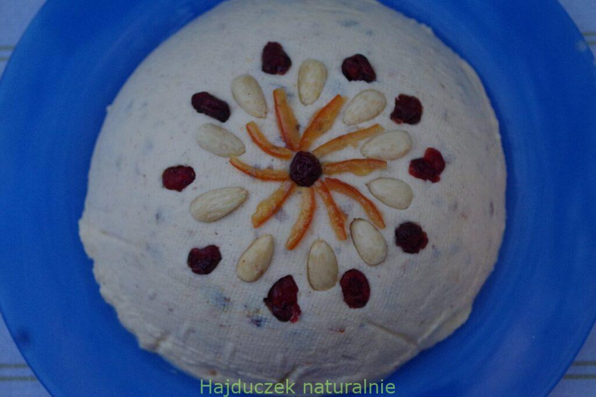
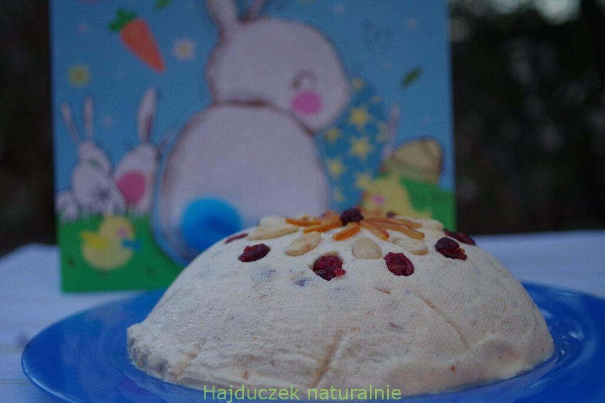

powrót do strony głownej
ROBERT MAKŁOWICZ - PROSTA PASCHA
Jakiś wybrany rodzaj paschy gości na naszym stole wielkanocnym każdego niemal roku, a dzisiejsza prosta pascha pochodzi od Roberta Makłowicza. Bo ja zawsze szukam ułatwień, nie lubię komplikować receptur i życia w ogóle, więc ten przepis na paschę po prostu mnie urzekł. W tym miejscu przyznam się, że bardzo lubię paschę, o wiele bardziej, niż każdy dowolny sernik. Nawet pyszny sernik nowojorski! A wiesz przecież, że Hajduczek zwykle przedstawia proste (i czasem trochę leniwe) przepisy na życie, prawda? Są więc i proste przepisy na Wielkanoc, jak dzisiejszy deser. Smaczna, choć prosta pascha 2021.
LISTA SKŁADNIKÓW
- 1 kg twarogu sernikowego (może być twaróg z Piątnicy, którego używa pan Robert,
- 3 jajka
- 1 szklanka cukru pudru (następnym razem użyję mniej, bo zawsze można dosypać po spróbowaniu)
- 1 torebka cukru waniliowego z prawdziwą wanilią (albo mała łyżeczka pasty z wanilii)
- 2 ziarna kardamonu utłuczone w moździerzu (lub szczypta zmielonego)
- odrobina soli
- garść rodzynek sparzonych wrzątkiem
- garść kandyzowanej skórki pomarańczowej (część posłuży do ozdoby)
- otarta skórka z 1 niewoskowanej cytryny
- opcjonalnie – różne bakalie do przybrania paschy
PRZYGOTOWANIE
- Do misy miksera przełóż twaróg i wbij całe jajka (warto je przedtem sparzyć, bo pascha będzie jedzona na surowo). Dodaj cukier puder i cukier z wanilią (albo pastę waniliową), zmielony kardamon i szczyptę soli. Masę dokładnie wymieszaj mikserem. Po wstępnym utarciu dodaj także sparzone i odcedzone rodzynki, połowę kandyzowanej skórki pomarańczowej oraz skórkę otartą z cytryny.
- Durszlak czy też duże sito wyłóż podwójną warstwą gazy. Przełóż masę serową do durszlaka, który postawisz w głębokim talerzu (albo zawiesisz nad miską, jeśli sita nie da się postawić).
- Przykryj masę narożnikami gazy i odstaw na minimum 12 godzin do lodówki. Nie trzeba niczym obciążać.
- Warto zabezpieczyć deser przed obcymi zapachami (na przykład kiełbasy czosnkowej – jej aromat nie jest tu pożądany!), przykrywając durszlak jak najszczelniej. Albo wstawiając do innej chłodziarki.
- W czasie tych 12 godzin z deseru odcieknie nadmiar serwatki, a prosta pascha stanie się bardziej ścisła i zwarta. Na tyle, że da się ją kroić nożem, choć wygodniejsza do dzielenia i nakładania deseru jest duża łyżka..
- Gotową, odcedzoną paschę przełóż na ładny talerz. Zdejmij gazę i postaraj się jak najpiękniej przyozdobić deser pozostałą kandyzowaną skórką pomarańczową plus ewentualnie innymi bakaliami – kandyzowanymi wiśniami, migdałami, orzechami, wiórkami startej czekolady itp.


